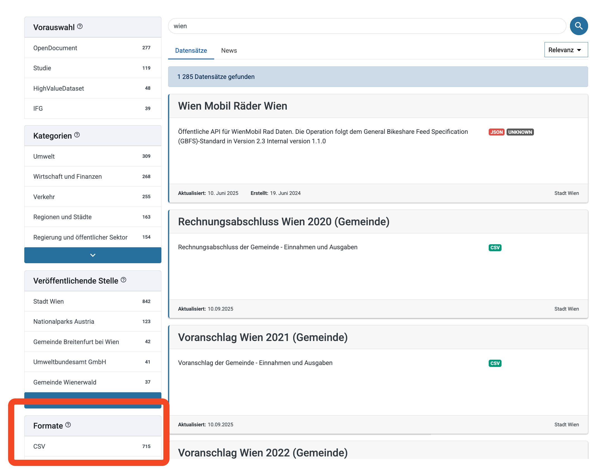

Chart & Chill Vol. 1
- Google Sheets ist die beste Methode: Der einfachste und flexibelste Weg, um Daten in Datawrapper zu bekommen, besonders bei der Zusammenarbeit im Team und bei sich ändernden Daten.
- Pro-Tipp: Gebt sheet.new in die Adresszeile eures Browsers ein, um sofort ein neues Google Sheet zu erstellen.
- Verbunden Zellen: Keine verbundenen Zellen in der ersten Zeile.
- Spaltenüberschriften: Jede Spalte muss eine eindeutige Überschrift haben.
- Jede Zeile ist ein Datenpunkt: Jede Zeile muss eine eindeutige Beobachtung repräsentieren.
- Mehr erfahren: Eine detaillierte Übersicht (mit Videos!) aller Upload-Möglichkeiten findet ihr in diesem Artikel der Datawrapper Academy.
Was sind Daten?
Im einfachsten Sinne sind Daten Sammlungen von Informationen. Für uns als Journalist:innen können das ganz unterschiedliche Dinge sein:
- Tabellarische Daten: Das ist die häufigste Form. Denkt an Excel-Tabellen oder Google Sheets. Jede Zeile ist ein Datensatz (z.B. ein Land, eine Person) und jede Spalte ist ein Merkmal (z.B. Bevölkerungszahl, Alter).
- Geodaten: Diese Daten haben einen räumlichen Bezug, z.B. die Koordinaten von Städten oder die Umrisse von Ländern. Datawrapper kann hervorragend damit umgehen.
- Textdaten: Auch unstrukturierte Texte können Daten sein, z.B. Reden von Politiker:innen oder Tweets. Diese müssen aber oft erst aufbereitet werden.
- CSV (.csv): Comma-Separated Values. Das einfachste und universellste Format für Tabellendaten. Jede Tabellenkalkulation kann das exportieren. Wir werden es fast immer benutzen.
- Excel (.xlsx): Das bekannte Excel-Format. Datawrapper kann das zwar importieren, aber CSV ist oft weniger fehleranfällig.
- JSON (.json): JavaScript Object Notation. Ein flexibles Format, das oft von APIs (Programmierschnittstellen) im Web verwendet wird.
- GeoJSON (.geojson) / Shapefiles (.shp): Standardformate für Geodaten. Wenn ihr Karten machen wollt, werdet ihr diesen Formaten begegnen. Datawrapper kann GeoJSONs direkt verarbeiten.
Wo finde ich Daten?
Gute Daten sind die Grundlage jeder guten Datenvisualisierung. Hier sind einige Anlaufstellen:
- Statistische Ämter: Destatis in Deutschland, Eurostat für die EU, die Weltbank für globale Daten.
- Open-Data-Portale: Viele Städte und Länder bieten mittlerweile Open-Data-Portale an (z.B. data.gv.at, opendata.swiss).

- Wissenschaftliche Studien: Forschungsinstitute veröffentlichen oft ihre Datensätze.
- Eigene Recherche: Manchmal müsst ihr die Daten selbst erheben, z.B. durch Umfragen oder das systematische Sammeln von Informationen.
Wie bereite ich Daten für Datawrapper vor? (Best Practices)
Datawrapper mag “saubere” und “tidy” (aufgeräumte) Daten. Je besser eure Daten vorbereitet sind, desto schneller und einfacher ist die Visualisierung. Hier sind die wichtigsten Regeln, die ihr immer beachten solltet:
- Ein Header, eine Zeile: Die allererste Zeile muss die eindeutigen Spaltenüberschriften enthalten. Keine leeren Zeilen darüber, keine verbundenen Zellen.

- Ein Datensatz pro Zeile: Jede Zeile sollte eine einzelne Beobachtung repräsentieren (z.B. ein Land, ein Jahr, eine Person).
Jede Zeile muss eine vollständige Information sein. Informationen zu einem Datenpunkt (z.B. zu Österreich 2023) dürfen nicht über mehrere Zeilen verteilt sein.
So nicht!
| Land | Wert |
|---|---|
| Österreich | |
| 9.100.000 | |
| Deutschland | |
| 84.400.000 |
Sondern so:
| Land | Einwohner |
|---|---|
| Österreich | 9100000 |
| Deutschland | 84400000 |
- Ein Merkmal pro Spalte: Jede Spalte sollte genau eine Variable enthalten (z.B. Einwohner, BIP, Name). Mischt keine unterschiedlichen Informationstypen in einer Spalte.
Vermischt keine unterschiedlichen Informationen in einer einzigen Zelle. Datawrapper kann “Wien, 1. Bezirk” nicht als Stadt und Bezirk gleichzeitig verstehen. Trennt diese Informationen in eigene Spalten auf.
So nicht!
| Ort | Einwohner |
|---|---|
| Wien, 1. Bezirk | 16.033 |
| Wien, 2. Bezirk | 108.433 |
Sondern so:
| Stadt | Bezirk | Einwohner |
|---|---|---|
| Wien | 1 | 16033 |
| Wien | 2 | 108433 |
- Keine Formatierungen: Datawrapper ignoriert fette Schrift, Farben oder kursive Buchstaben. Wichtiger ist der Inhalt. Entfernt auch Tausendertrennzeichen (wie
.oder,) aus Zahlen.1000000ist gut,1.000.000ist schlecht. Dezimaltrennzeichen sollten ein Punkt (.) sein.
Datawrapper braucht “rohe” Zahlen. Prozentzeichen, Währungssymbole, Tausenderpunkte oder Kommas machen aus einer Zahl einen Text und unbrauchbar für die Visualisierung. Formatierungen wie Fett- oder Kursivdruck werden ignoriert.
So nicht!
| Land | BIP (in Mio.) | Anteil |
|---|---|---|
| Österreich | € 447.710 | 5,5% |
| Deutschland | € 3.867.050 | 47,3% |
Sondern so:
| Land | BIP_Mio | Anteil |
|---|---|---|
| Österreich | 447710 | 5.5 |
| Deutschland | 3867050 | 47.3 |
- Konsistente Bezeichnungen: Achtet auf einheitliche Schreibweisen, besonders bei Kategorien (z.B. immer “CDU” und nicht mal “CDU” und mal “Christlich Demokratische Union”).
Für Datawrapper sind “SPÖ” und “Sozialdemokratische Partei” zwei komplett unterschiedliche Dinge. Achtet darauf, dass gleiche Dinge immer exakt gleich geschrieben werden, sonst bekommt ihr ungewollt neue Kategorien in eurer Grafik.
So nicht!
| Partei | Stimmen |
|---|---|
| SPÖ | 1000 |
| OVP | 1200 |
| SPOE | 500 |
| ÖVP | 800 |
Sondern so:
| Partei | Stimmen |
|---|---|
| SPÖ | 1500 |
| ÖVP | 2000 |
- Lange vs. Breite Daten: Für die meisten Diagramme (insbesondere Linien- und Balkendiagramme über die Zeit) bevorzugt Datawrapper ein “langes” Datenformat anstelle eines “breiten”.
Das ist ein wichtiges Konzept. Stellt euch vor, ihr habt Verkaufszahlen für mehrere Produkte über mehrere Jahre.
“Breite Daten” haben für jedes Jahr eine eigene Spalte. Das ist oft unpraktisch, aber für manche Diagrammtypen in Datawrapper (wie z.B. Linien-Diagramme) notwendig.
Breit:
| Produkt | 2021 | 2022 | 2023 |
|---|---|---|---|
| Apfel | 100 | 120 | 140 |
| Birne | 80 | 85 | 95 |
“Lange Daten” haben eine Spalte für die Jahreszahl und eine für den Wert. Das ist flexibler und oft der “ordentlichere” Weg, Daten zu speichern.
Lang:
| Produkt | Jahr | Verkauft |
|---|---|---|
| Apfel | 2021 | 100 |
| Apfel | 2022 | 120 |
| Apfel | 2023 | 140 |
| Birne | 2021 | 80 |
| Birne | 2022 | 85 |
| Birne | 2023 | 95 |
Welches Format das richtige ist, hängt stark vom Diagrammtyp ab, den ihr erstellen wollt. Ein Liniendiagramm in Datawrapper zum Beispiel erwartet für jede Linie eine eigene Spalte. Die erste Spalte ist dabei die X-Achse (oft eine Zeitangabe).
Beispiel für Datawrapper-Liniendiagramm (Breit):
| Jahr | Apfel | Birne |
|---|---|---|
| 2021 | 100 | 80 |
| 2022 | 120 | 85 |
| 2023 | 140 | 95 |
Wie lade ich Daten in Datawrapper hoch?
Es gibt mehrere Wege, Daten in Datawrapper zu bekommen, aber einer ist für den journalistischen Alltag besonders mächtig.
Kopieren & Einfügen: Schnell und einfach für einmalige Visualisierungen. Öffnet eure Tabelle, markiert alles (inkl. Header), kopiert es und fügt es in Datawrapper ein. Funktioniert gut, ist aber nicht flexibel.
CSV-Upload: Eine solide Methode. Ihr könnt eine CSV-Datei exportieren und in Datawrapper hochladen.
Verknüpfung mit Google Sheets (Der empfohlene Weg): Dies ist die beste Methode für Daten, die sich ändern oder aktualisiert werden könnten (z.B. Umfrageergebnisse, Wahlergebnisse, Corona-Zahlen).
- Der riesige Vorteil: Wenn ihr euer Google Sheet veröffentlicht und mit Datawrapper verknüpft, müsst ihr eure Daten nie wieder manuell hochladen. Ändert sich eine Zahl im Google Sheet, könnt ihr eure Visualisierung in Datawrapper mit einem Klick aktualisieren. Das spart unglaublich viel Zeit und vermeidet Fehler.
- So geht’s: Erstellt euer Google Sheet, geht auf
Datei > Freigeben > Im Web veröffentlichenund wählt “Kommagetrennte Werte (.csv)”. Kopiert den Link und fügt ihn in Datawrapper ein.
Nach dem Upload prüft Datawrapper eure Daten. Achtet auf eventuelle Fehlermeldungen und korrigiert die Spaltentypen (Text, Zahl, Datum), falls Datawrapper sie nicht automatisch richtig erkannt hat.
Das war’s für die erste Lektion! Im nächsten Teil werden wir unsere ersten Diagramme erstellen.
Challenge: Daten aus einem PDF retten
Jetzt seid ihr dran! Eine der häufigsten und manchmal frustrierendsten Aufgaben im Datenjournalismus ist es, interessante Daten aus PDF-Dokumenten zu befreien.
Euer Ziel: Eine einfache Tabelle aus einem PDF-Bericht in Datawrapper visualisieren.
Das Problem: PDFs sind oft “Datengräber”. Man kann die Tabellen zwar sehen, aber nur schwer herauskopieren. Beim direkten Kopieren geht oft die Tabellenstruktur kaputt, Zahlen werden als Text erkannt oder es entstehen Fehler.
Eure Aufgabe:
Bericht finden: Öffnet den Kernbericht der Studierenden-Sozialerhebung 2023.
Tabelle auswählen: Sucht euch eine einfache Tabelle aus dem Bericht aus. Ein gutes Beispiel ist Tabelle 154: “Gründe für die derzeitigen finanziellen Schwierigkeiten 2019 und 2023”. Sie ist übersichtlich und hat nur wenige Spalten.
Daten in Google Sheets übertragen:
Öffnet ein neues Google Sheet (z.B. mit sheet.new).
Versucht, die Tabelle aus dem PDF zu kopieren und in das Sheet einzufügen. Ihr werdet wahrscheinlich sehen, dass das Ergebnis unsauber ist.
- Pro-Tipp: KI zu Hilfe nehmen
Das manuelle Abtippen ist mühsam und fehleranfällig. Moderne KI-Tools können euch hier enorm helfen!
Tools wie ChatGPT, Claude oder Gemini können unstrukturierte Daten aus PDFs oft erstaunlich gut in saubere Tabellen umwandeln. Probiert es aus: Kopiert den unsauberen Text aus dem PDF und bittet die KI, daraus eine CSV-formatierte Tabelle zu erstellen. Das kann euch sehr viel Zeit sparen.

Der eigentliche Job: Bereinigt die Daten manuell. Das bedeutet, die Werte von Hand in die richtigen Zellen zu tippen, sodass ihr eine saubere, strukturierte Tabelle habt. Achtet darauf, die Prozentzeichen (
%) zu entfernen, damit Datawrapper die Werte als Zahlen erkennt. Ihr solltet drei Spalten haben:Grund,2019und2023.
Mit Datawrapper verknüpfen (Der wichtigste Schritt!):
- Jetzt kommt der entscheidende Teil, den wir gelernt haben: Wir kopieren die Daten nicht, wir verknüpfen sie direkt!
- Klickt in eurem sauberen Google Sheet oben rechts auf den grünen “Teilen”-Button.
- Ändert im Pop-up-Fenster den “Allgemeinen Zugriff” auf “Jeder, der über den Link verfügt”.
- Klickt auf “Link kopieren”.
- Fügt diesen Link in Datawrapper in Schritt 1 bei der Option “Connect Google Sheet” ein.
- Das war’s! Jetzt ist eure Visualisierung direkt mit dem Google Sheet verbunden. Wenn ihr später einen Tippfehler im Sheet korrigiert, könnt ihr die Grafik in Datawrapper mit einem Klick aktualisieren, ohne alles neu hochladen zu müssen.
- (Erstellt eine Visualisierung. Ein gruppiertes Säulendiagramm wäre hier eine gute Wahl, um die Veränderungen von 2019 zu 2023 zu zeigen.)